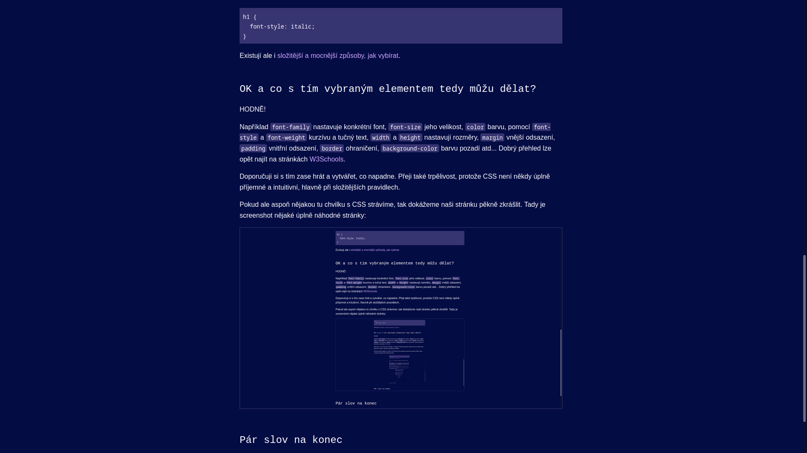

CSS aneb Jéé, barvičky!
Nechcete, aby vaše stránka vypadala tak obyčejně, černobíle a defaultně? Nechcete, aby o vás přátelé říkali, že neumíte dělat webové stránky? Představujeme zbrusu nové Kaskádové styly (CSS)!
Mám štětec a kyblík barvy – kde začít?
Jsou tři druhy CSS:
- Inline CSS se píše rovnou do HTML elementů jako atribut, např:
<p style="color: red; font-weight: bold">Varování</p>(text bude červeně a tučně) - U interního CSS už jsou všechny styly pohromadě, ale jsou pořád součástí HTML souboru v elementu
style(který se dává dohead). - Nejvíce je ale doporučované externí CSS. Píše se do vlastního souboru s příponou
cssa je tedy odděleně od HTML, což je mnohem přehlednější. Budeme tedy používat to.
Vytvoříme nový textový soubor, např. styles.css, a v HTML řekneme, že má používat styly z tohoto souboru:
<head>
...
<link rel="stylesheet" href="styles.css">
</head>Jak říci, že chci obarvit Tohle?
Existuje několik způsobů, jak v CSS vybrat HTML element(y).
Pokud chceme jeden určitý element, například určitý p, ale ne ostatní p, tak použijeme id. Jedno id má být správně použito maximálně u jednoho elementu, který je tak unikátní. Do HTML ho přidáme jako atribut. V CSS před něj napíšeme #:
<p id="odstavec-1">Varování</p>#odstavec-1 {
color: red;
font-weight: bold;
}Dále se pak může hodit vybrat více určitých elementů. Na to tu je class. Stejně jako id se píše jako atribut, ale předponu v CSS má . a více elementů může mít tu stejnou třídu.
<h1 class="cervene">Červený nadpis</h1>
<p class="cervene">Varování</p>
<p>Jablíčka jsou často <span class="cervene">červená</span>.</p>.cervene {
color: red;
}A nakonec lze také vybrat všechny elementy stejného typu. Žádný atribut v HTML ani předponu v CSS tentokrát přidávat nemusím. Tento styl například nastaví u všech h1 kurzívu:
h1 {
font-style: italic;
}Existují ale i složitější a mocnější způsoby, jak vybírat.
OK a co s tím vybraným elementem tedy můžu dělat?
HODNĚ!
Například font-family nastavuje konkrétní font, font-size jeho velikost, color barvu, pomocí font-style a font-weight kurzívu a tučný text, width a height nastavují rozměry, margin vnější odsazení, padding vnitřní odsazení, border ohraničení, background-color barvu pozadí atd... Dobrý přehled lze opět najít na stránkách W3Schools.
Doporučuji si s tím zase hrát a vytvářet, co napadne. Přeji také trpělivost, protože CSS není někdy úplně příjemné a intuitivní, hlavně při složitějších pravidlech.
Pokud ale aspoň nějakou tu chvilku s CSS strávíme, tak dokážeme naši stránku pěkně zkrášlit. Tady je screenshot nějaké úplně náhodné stránky:

Pár slov na konec
Čtenáři, děkuji, že jsi se vydal se mnou na toto dobrodružství po webové galaxii. Od této chvíle jsi opravdový stopař. A hlavně nezapomeň: NEPROPADEJ PANICE!